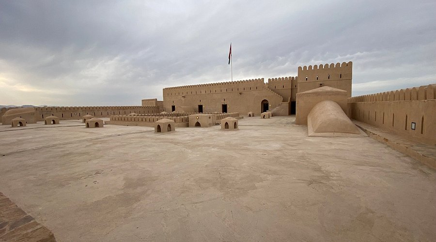
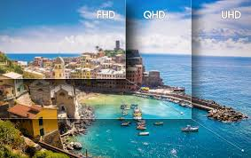

🏛️ Oman Castles Gallery
Hover to see details

🏰 Nizwa Fort
Built: 1668 AD
Location: Nizwa, Interior
Famous for its massive circular tower

🏰 Bahla Fort
Built: 13th Century
Location: Bahla, Interior
UNESCO World Heritage Site

🏰 Jabrin Castle
Built: 1675 AD
Location: Interior Oman
Famous for decorated ceilings

🏰 Rustaq Fort
Built: 1250 AD
Location: Rustaq, Batinah
One of the oldest forts

🏰 Nakhal Fort
Built: 1500 AD
Location: Nakhal, Batinah
Strategic location

🕌 Sultan Qaboos Mosque
Built: 2001 AD
Location: Muscat
One of largest mosques
🎨 Image Editor
Upload an image and apply filters
Art Direction
Art Direction is the process of defining and guiding the visual style of a project to ensure a consistent and impactful look.

Optimizing Images for Different Pixel Densities
Srcset enables responsive images by serving different resolutions based on device pixel density.

Interactive Video Experience
Choose your path through Omani culture
3D Interactive Experience
Explore Omani Khanjar in 3D - Drag to rotate, Scroll to zoom
Khanjar
Traditional Dagger
Nizwa Fort
1668 AD
Sultan Mosque
Grand Mosque
Heritage
UNESCO Sites
Audio Journey
Listen to the narrated journey through Omani culture
🎵 Omani Music
Press play for traditional music
Or press Ctrl+Shift+O for Easter Egg
Upload Media
Upload your images, audio, and video files
Click to upload or drag and drop
Images, Audio, or Video files